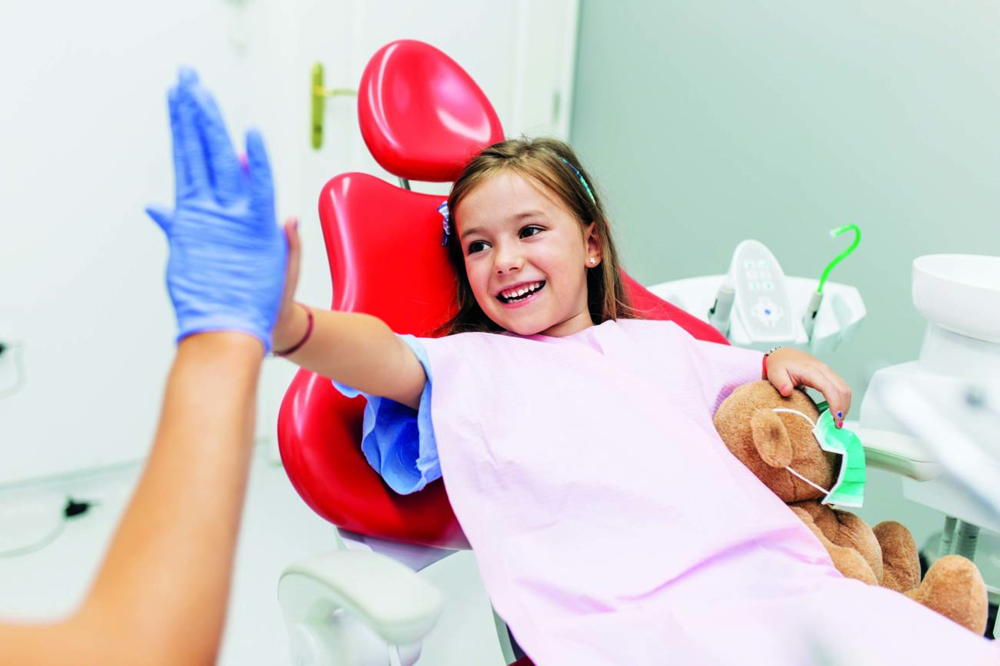

Odontología Infantil: Conserva la Sonrisa de tus Pequeños con Salud Dental
La odontología infantil es un aspecto crucial para asegurar la salud bucal de nuestros pequeños desde temprana edad. En nuestra clínica, ofrecemos servicios especializados en odontología infantil diseñados para tratar y preservar la sonrisa de los niños, incluso en casos de dientes gravemente dañados o infectados.
Cuando los dientes de leche de los niños se ven afectados por caries profundas, fracturas o traumas, es esencial intervenir para evitar complicaciones futuras y preservar su salud dental a largo plazo. Nuestro equipo de odontólogos pediátricos altamente capacitados está dedicado a proporcionar un cuidado compasivo y de alta calidad para garantizar la comodidad y seguridad de los niños durante el proceso.
En nuestra clínica, entendemos la importancia de preservar la sonrisa y la salud dental de los niños desde una edad temprana. Nuestro equipo está comprometido a brindar un cuidado amoroso y profesional para garantizar una experiencia positiva y duradera en el cuidado dental de tus hijos. Si notas señales de dolor persistente, sensibilidad o inflamación alrededor de los dientes de tu hijo, te invitamos a programar una consulta con nuestros especialistas en odontología infantil. ¡No permitas que problemas dentales afecten la sonrisa de tus pequeños! ¡Contáctanos hoy mismo y descubre cómo podemos ayudarte a mantener las sonrisas de tus hijos saludables y radiantes!
